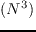
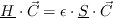

We are now ready to use the fruit of our work in a real-life scientific problem. The code which we gave you calculates the ground state (lowest) energy and wavefunction of the hydrogen atom. Hydrogen atom consists of only one proton and only one electron. The quantum theory tells us how to calculate energies and wave functions for any atom, although only in an approximate manner. The reason why we picked a hydrogen atom is two-fold. First, this is the simplest atomic system whose variational treatment leads to a set of linear-algebraic equations. If you forgot your quantum mechanics and do not understand what ``variational" means, do not panic - we will explain it to you in a moment. The important point is that the set of linear-algebraic equations just mentioned can be completely solved using just one LAPACK driver routine. The second reason why we picked the hydrogen atom for our example is that in this particular case we are lucky enough to know the analytical solution and thus can check our work. I want you to keep in mind, however, that for the great majority of current scientific problems the analytical solutions are not known and we have to rely on approximate ones, best of which can usually be obtained numerically, more often then not with the help of efficient scientific libraries. In case of atomic physics these libraries include mainly LAPACK, fast Fourier transform, and various integration routines.
So how do we solve for the ground state of the hydrogen atom? You have
probably heard about the Schrödinger equation for a wavefunction
. Function contains all information about a quantum
system and the Schrödinger equation is a differential equation
which describes its behavior. The
Schrödinger equation is in quantum mechanics what the familiar (Newton,
Lagrange or Hamilton) equation of motion is in classical mechanics.
If we wrote down this equation for the hydrogen atom we could then solve
it analytically and find its exact solution. We could also attempt
to integrate this equation numerically on a preconceived grid of points in
space obtaining physically exact but mathematically approximate solution.
However, there exists another approach, based on the Ritz variational
principle, which simply states that the true ground state energy of a quantum
system is a lower bound to a certain expression involving trial
wavefunctions. We are free to chose these trial wavefunction at will as
long as they fulfill certain criteria. Mathematically, we talk about
infinitely dimensional linear vector space, called the Hilbert space to
which these trial wavefunctions belong. In practice, we work with subspaces
of the Hilbert space and build our trial functions out of truncated (at )
series of so-called basis functions :
It is then possible to rewrite the Ritz variational principle in terms of
a set of algebraic equations which in matrix notation takes on a form of
the eigenvalue problem
or, if the basis functions are not orthonormal
Equation ( ) represents a so-called generalized eigenvalue problem. Here, is the Hamiltonian matrix, which contains information about kinetic and potential energies of a quantum system and is the so-called overlap matrix which arises from nonorthonormality of the basis functions. In the current example we will not be concerned about these matrices. Their elements can be easily calculated and they are, in fact, given to us in the program. The scalar is the unknown ground state energy of the hydrogen atom and the corresponding elements of the vector are the unknown expansion coefficients in equation ( ), for this energy.
The code is written in FORTRAN 90 and consists of two main modules.
The module matrix_elements (file
matrielements.f90) casts the problem
of solving a Schrödinger equation for the hydrogen atom into a
linear algebraic problem of solving a generalized eigenvalue equation,
as described above.
Matrices
and
 ,
where we now explicitly show their dimensions, enter the equation in the
following manner:
,
where we now explicitly show their dimensions, enter the equation in the
following manner:
Some of you are probably guessing that the number
N is arbitrary and that perhaps the larger it is the better the
corresponding solution to our original problem may be. RIGHT!. BUT,
there is a big price to pay if we try to increase above a
certain, reasonable number. The number of numerical operations
to solve Eq. (
 ) is at least
) is at least  - we say that
the algorithm which
solves Eq. (
) scales as O
- we say that
the algorithm which
solves Eq. (
) scales as O with the size
of a problem.
Imagine, if your is 10 you have (roughly!, and this number
should be understood only logarithmically)
operations
to do. If your is 100 you are looking at 10000 operations,
if your is 1000 you have 1000000 operations, etc. Scary, isn't it?
And what if I tell you that solving Eq. (
)
involves a very
cumbersome and difficult to program algebra? What about optimization?
Does this all seem hopeless?
Before you decide not to become a quantum chemist let me share
the good news with you. We do not have to do all the work
by ourselves! We have LAPACK, which you have just compiled, at
our disposal. It will solve, as you will see in our next lab,
our problem expressed by Eq. (
)
in just one call to one of its driver routines.
with the size
of a problem.
Imagine, if your is 10 you have (roughly!, and this number
should be understood only logarithmically)
operations
to do. If your is 100 you are looking at 10000 operations,
if your is 1000 you have 1000000 operations, etc. Scary, isn't it?
And what if I tell you that solving Eq. (
)
involves a very
cumbersome and difficult to program algebra? What about optimization?
Does this all seem hopeless?
Before you decide not to become a quantum chemist let me share
the good news with you. We do not have to do all the work
by ourselves! We have LAPACK, which you have just compiled, at
our disposal. It will solve, as you will see in our next lab,
our problem expressed by Eq. (
)
in just one call to one of its driver routines.
We will now work with you through the code example to show you how this is done.
|
[width=9.0cm] 300grace.eps
|
|
[width=9.0cm] 300diffgrace.eps
|